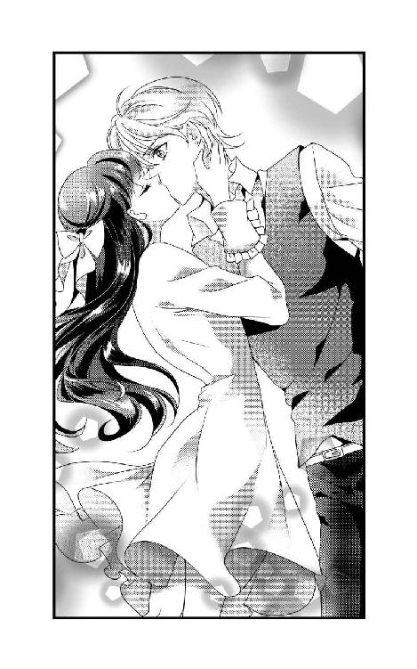

| イケメンGIRL! | |
| 水沢みと | |
| Mizusawa Shoten (2015) | |
水沢みと
漆黒の闇が、世界を覆う刻。
暗闇をものともせず、あたしは仲間たちと疾走している。
その夜の『仕事』を終えて、後は迎えの車と落ち合うのみ。
「由紀さん！」
先頭を走るあたしに向かって、後ろの仲間から声が飛んできた。
「後ろ、追って来てる奴が......」
「とっくに気付いてるって」
口の端に、余裕の笑みを浮かべる。
首尾よく片付けたはずの仕事が、パーフェクトではなかったことへの少々の残念さは感じたけど。
――めちゃくちゃ、ドキドキする！
闇が、速さが、命の取り合いが。
それはまるで、恋のように、この胸を高鳴らせる。
――恋をしないあたしには、ぴったりの代償行動だ。
身をひるがえすと、手にした拳銃の引き金を、軽やかに引いた。
その人と目が合った瞬間に、心が絡め取られる、なんて経験、この十六年間の人生で初めてのことだった。
私、宗田翔子が、この私立さつき原高校の一年生として、二学期の始まりと共に転校してきたのは、単純に父の仕事の都合によるものだ。
会社ではそれなりの役職についている父と、専業主婦の母、そして私の三人家族。
これまでの人生で、特に不満もストレスも感じずに生きてこられたのは、奇跡的に運がいいのだと思う。
そんな私にとって、これからもきっと平々凡々とした日常が続くと思っていた矢先の、その人との出会い。
これが、運命の歯車が回り始めたってことなんだろうな。
「宗田翔子です。これからどうぞよろしくお願いします」
深々とおじぎをして、目の前のクラスメイトたちに頭を下げた。
今日から一緒に学業に励む人たち。仲良くしてもらえるといいな、という気持ちと同時に、窓際の席から、私と一瞬目が合ったその人のことが、頭の中で一杯になっている。
とても、美しい人。
金色に近い茶髪に染めて、右で分け目を作った無造作ヘア。ショートカットが良く似合う。ピアスが耳に光っていた。
石膏像のように整った顔立ちに、なにより心奪われたのは、その瞳。
自信と、野心と、達観と、真っ直ぐさ。
そんな色を宿した、強い視線。
たった一瞬の時間の中で、これほどの強烈な印象を覚えさせた。
釣り目がちな目が、どこかいじわるそうで、それでいて、魅力的で仕方がない。
私が一目惚れしたのは、そんな女の子。
後で知った名前は、『池原由紀』。
「宗田さん、きれいだねー。めっちゃモテるでしょ」
休み時間。
私の席の周りに、クラスメイトの女子が数人やって来て、さっそくあいさつをしてくれた。
「そんなことないです」
「謙遜しないでも～。ロングの黒髪もすごいさらさらだし。色白でこんな美人だし。ほんと、お人形さんみたい。彼氏とかいた？」
「ちょっと理子！ さすがに初対面からそういう質問は馴れ馴れしいんじゃないの」
「そっか。みちるの言う通りだね。ごめん、宗田さん。ちょっと興奮しちゃって」
「大丈夫です」
内心ほっとして、笑顔を返す。
自分の容姿に対して、人から好意的に見られることには慣れている。
わりと小さいうちに、いわゆる恵まれた容姿というものを授かって生まれてきたのには気付いていた。正確には、気付かされた。大人たちの口々の褒めたたえる言葉。同じ年頃の子供たちからの好意的な言動。
調子に乗れば、足元をすくわれるような称賛だとしても、意識的に控えめにしていれば、ほとんど良い結果に落ち着く。
鏡に映った自分を好ましく思えるのは、嬉しいことだとわかっているし、卑屈も傲慢もなく、私はただ、穏やかな風のように存在すればいい。
きゃっきゃとした会話のさなか、ちらりと窓際のあの人を盗み見た。
机にうつ伏せになって、眠っている。
本当に寝ているのか、意識は起きているのか、そこまではわからないけれど。
「ん？ 誰見てるの」
「え、えと......」
しまった。理子さんに視線を気付かれてしまった。
「あー、池原由紀か。あいつ目立つしね。......いい機会だわ。先に言っておいてあげた方が宗田さんの為だもんね」
「なに？」
平静を装って聞いてみる。理子さんの顔は険しい。
「あいつのこと、クラスメイトだなんて思わない方がいいよ。てか、近付いたら危険って覚えておいた方がいい」
「どうして、そんなことを......」
ひどい、と言おうとした私の言葉を、理子さんの言葉がさえぎった。
「池原、レズだから」
その一言は、私の思考を止めるには充分で。
飲んだ言葉の持って行きようがないまま、無意識的に、あの人の方を見た。
いつの間にか、寝ていたはずのあの人は、こちらを見ていた。
視線が合う。
――にこっ。
「！」
あの人が笑った。
その笑顔の中に、どんな感情が含まれているのか、なにも察することはできなくて。
ただ、私はその笑みを、美しいと思った。
体育館に貼り出された、体力テストの種目別の上位者の表。その女子の一位を総なめにしているのが池原さんだった。
ハンドボール投げも、五十メートル走も、なにもかも、全部、二位以下と圧倒的に差を付けている。
ほとんど男子と同じレベルの数値だった。
「すごい......」
ほぅっとため息が出る。
転校してきて一週間が経ち、だいぶこの学校の雰囲気も掴めてきた。
一緒にご飯を食べたり、おしゃべりをする人たちもできた。
けど気になっているのは、あの人のこと。
あの人は、一週間前に私に微笑みかけたっきり、私にかかわってくる様子はない。
話しかけてきたりもしない。
私の方から近付きたい気持ちがあっても、勇気が出ない。
クラスの中で、『レズ』と陰口をたたかれている池原さんは、こうして体育の授業でも、みんながかたまってバスケットボールを見ている中で、一人群れから離れていた。
みんな、池原さんを悪い意味で特別視している。
男子からは、たぶん下に見たいという気持ちからくる悪口を聞いた。
女子は、嫌悪の気持ちを持っているようだった。
そうして明らかに避けられているのに、彼女は平気な顔をして、いつも一人でいる。
そんな池原さんを見ていて、心がちくちくする感覚を覚える。
――かわいそう、だなんて決めつけたら、偽善的に思われるのかな......。
ピピーっと先生が笛を鳴らした。
試合をする生徒の交代だ。
私はコートに入る。池原さんが、相手チームで入ってきた。
その姿を見ていると、胸がドキドキしてくる。
身長は、百五十三センチの私よりも十センチは高いだろう。
すらっとした長い手足。思考を読ませない、クールな表情。
どんな人かなんて、まだ全然わからない。それなのに、惹き付けられる。
ピッと笛が鳴った。
試合開始。
ジャンプした生徒がはたいたボールは、池原さんとは別の方向に飛んだ。
次の瞬間。
ものすごいスピードで走って移動した池原さんが、他の生徒が受け取りそうになったボールを、横からキャッチした。
それから私は、ただ呆然と見ている他できなかった。
彼女が、華麗にドリブルをしていき、ディフェンスをかいくぐり、なんでもないよ、と言うようにジャンプしてダンクショットを決めるところを。
あまりにきれいな、無駄のない動き。
それはまるで、アートの世界だった。
心臓が、大きく脈打った。
――やっぱり、私、あの人のこと......。
その気持ちの先を考えるのは、意識的に止めた。
「宗田さん、俺と付き合ってよ」
昼休み。中庭に呼び出された私は、隣のクラスの男子に唐突の告白をされた。
「えっと......」
「俺、けっこうイケてるだろ？ わりとモテるんだぜ」
自慢げに髪をかき上げる。名前は、田中くんだっけ、確か。
身長が高くて、痩せ型。顔は自分で言うだけあって、モテるんだろうな～とは思う。
「告白とかもめっちゃされるんだけどさ。俺に釣り合う女子がなかなかいなくて。君を見たときにびっときたんだよね～。この子なら、俺にふさわしい！ って」
――なんだろう。ナルシストもここまでくると、すごいというか......でもやっぱり苦手かな。
力なく笑顔を作りつつ、どう断れば傷付けないですむか、頭をフル回転させてみる。
正直に言って、今までに告白をされた回数は、一回や二回ではない。
でもその全てに対して、ＮＯと答えてきた。
男の子のなにが嫌なのか、自分では解答をまだ出せていない。
けれどはっきりしているのは、心がときめくような異性には、これまでも会ったことがないし、これからもたぶんないのだろうな、ということ。
理屈じゃない。ただ、そういうふうに自分の心が強く構築されているだけ。
「ね、ＯＫするだろ？ キスとかしてあげようか」
「ひゃっ!?」
突然手首を掴まれ、田中くんが迫ってきた。
恐怖。
嫌悪。
あらゆる負の感情が、身体全体に広がっていき、鳥肌が立つ。
「や、やめてっ！」
掴まれた手首が痛い。
――嫌だ！ 誰か助けて！
声が出ない。――怖いっ！
「いーけないんだ～。嫌がる女子に力ずくとかー。だっせ」
そのとき、目の前に現れたその人が、いつからそこにいたのかはわからない。
まるで魔法使いのように、突然姿を現したように見えた。
「て、てめぇ、池原っ!?」
「てめぇ呼ばわりされたくないな、性犯罪者ごときに」
私は、今しがたの窮地を忘れてしまいそうなほど、池原さんの初めて聞く声に聞き入ってしまった。
後ろから照らす陽光が、まるで後光のように彼女の身体から発して見える。
穏やかさと強さを内包した、クリアで聞き心地の良い声と合わさって、私はおかしなことを考えてしまう。
――この人、神様なのかな。
たぶん、あまりにもパニックの心境だったから、そんなことがとっさに頭に浮かんだのだ。さすがに口には出さなかったけれど。
「レズ野郎が、邪魔すんじゃねえ！」
「合意の上なら邪魔しないけどさ。どう見ても、彼女嫌がってるんだけど」
池原さんが私と視線を合わす。目が合ったのは三回目。何度見ても、きれいな瞳。
「どうなの？ 宗田さん」
――私のことを『宗田さん』って呼んでくれた！
それだけで、胸がきゅんとして、嬉しい気持ちで一杯になる。
「お、俺の方がいいよな、こんな男女より！」
「そいつ、いろんな女の子に手、出しまくりの最低野郎だから、おすすめしないよ。ツラはいいけど、性格と頭悪いから」
「だまれ、池原！ お、お前、ちょっと成績が良くて特待生だからって、ちょーしこいてんじゃねーぞ!!」
え、すごい。池原さん、ここの学校の特待生なんだ。成績上位者から若干名しかなれない特待生。そう簡単になれるものじゃないのに。
「暴力に訴える？ そっちが先に手を出したら、自衛が成立するよね......」
「うぐっ、く、くそっ......」
池原さんは、氷のように冷えた視線を痴漢に浴びせる。
痴漢は――もうこの人のことはそう呼ぶことにする――、たじろいで動けないでいた。
「あたしの評判を聞いてたら、手合せしない方が自分の為ってわかるよね？ いくら頭からっぽの田中くんでも」
くすっと笑う。
「お、おおお、覚えてろっ！」
ダダダッと走って、痴漢は逃げ去っていった。
「やだなー、そういう雑魚キャラ台詞」
呆れた顔で、走り去った痴漢を見送る池原さん。
すごい。余裕しか顔に浮かんでいない。
次の瞬間、へたり、と私は地面に座り込んでしまった。
「......大丈夫？ 気が抜けた？」
「う、うん」
「泣いてるじゃん」
そう言われて初めて、私は目の端から涙がこぼれているのに気付いた。手の甲でぬぐう。
「怖かったよね」
「うん......」
「やばいときには、大声あげないと」
「ごめんなさい」
「いや、謝らなくていいけど」
安心したのと、池原さんが目の前にいることへの緊張と、ああなんだかもう、この人のこと、なんだかもう......っていう感情がまぜこぜになって、立ち上がれない。
「手、貸そうか」
「大丈夫」
「そう。なら、貸さない」
そう言って、池原さんは、きびすを返した。
――行かないで。
そんな言葉を発したかったけれど、それはあまりにも甘えすぎだと思った。
第一、恥ずかしい。
でも、これだけは言っておかないと。
「あのっ」
「ん？」
池原さんが振り返る。
「ありがとう、本当に」
「......うん。これからは気を付けなよ」
そうして、穏やかな、優しい笑みを見せてくれた。
どうしよう。
胸のドキドキが、止まらないよ。
去っていく彼女をしばらく見つめてから、よろよろと立ち上がる。
きっと今、鏡で自分の顔を見たら、真っ赤で、にやけていて、それはもう人には見せられないありさまだろう。
すぅっと深呼吸する。
――同性とか、関係ない。あんなにかっこいい人、生まれて初めてだ。
――まいったな。あんな顔、見せられたら。
転校してきたばかりのクラスメイト、宗田翔子を助けることができたのは、偶然の出来事ではなかった。
女癖が悪いことで有名な田中に、彼女が呼び出されたのを見た瞬間に、ピンときた。
これはなにか起きる。
それも、あの子にとって良くないことが。
あたし池原由紀は、自慢じゃないが、きれいな女の子には相当弱い。
転校初日、クラスで自己紹介をしている彼女と一瞬、目が合った。
そのときに、いわゆる一目惚れってやつをしてしまった。
人が恋をするのには、一秒もいらない。
扁桃体でびびっときたとしたら、大脳新皮質の判断的に言うなら、整った顔立ち、ロングの髪、清楚な笑顔が気に入った。
どこか俗世間には染まらない、優雅な雰囲気もいい。
だけどこの想いを、彼女に言うつもりはない。
恋の悲しさを、あたしはもう充分すぎるほど味わってしまったから。
それでも、それとこれとは別で、あの子を助けなきゃと思った。
通りがかったふうを装って、彼女と田中の様子をうかがっていた。
案の定、田中が手を出そうと迫っているのを目視して、姿を現したという次第だ。
相手はたかが男子学生一人。本気を出すまでもないけど、一応手を出してくれば、応戦するつもりだった。
結果的には平穏無事？ に解決したわけだけど。
涙を目の端にためる彼女の顔。
心から安心して、あたしに言ってくれた言葉。
「ありがとう、か」
そんな言葉を聞いたのは、とても久しぶりの気がする。
そう伝える宗田翔子の頬が、心なしか赤かったような......。
自意識過剰かな。
頭を左右に軽く振って、空を見上げた。
息を吐き、自分に言い聞かせる。
――あたしはもう、恋はしない。
耳に付けたピアスに触れる。
これは、外すことのできない、十字架。
バイクのアクセルグリップを回し、ほどよいエンジンの回転数になったら、半クラッチからクラッチをつないだ。
滑らかに発進した愛車、パールスターダストホワイトのカワサキＺ２５０の上で、あたしは運転への注意と半分半分の思考領域で、宗田翔子のことを考えていた。
こんなふうに、他人について思いをめぐらすなんていうのは、本当に久しぶりの感覚だった。
彼女のさらさらの髪をこの指ですくってみたら、どれほど幸せを感じられるだろう。
いや、そのぐらいじゃ足りない。
キスや、その先も......って、こんなことを考えるのは失礼かな。助けてあげたお礼に、なんてさ。
妄想するぐらいは許してくれないかな。......ダメかな。
移ろいゆく景色の中で、風を身体に感じて、フルフェイスのヘルメット越しに前方を見据える。
――あたしには、やるべきこともあるし。桃色の頭になってる場合じゃない、か。
浮かべていた宗田翔子の笑顔をかき消して、加速チェンジの変速操作を素早くこなし、スピードを速めた。
今日請け負った仕事は、できれば今日中に終わらせたい。
それが、あたし池原由紀のモットーだ。
今回は、わりと歯ごたえのある作業になるだろう。
「た～のしみー！」
ヘルメットの中で、意気揚々と叫んだ。
翌日。
いつもながら、退屈で面倒でどうでもいい学校に、一応登校してみた。
教室に入り、自分の席に真っ直ぐ向かった。
あたしにあいさつしてくる奴はいないし、あたしの方からもそんなことはしない。
まったくもって日常。平常。
「おはよう」
「!?」
び、びっくりしたし！
あたしの日常をぶっ壊す気なのか、この子は。
目の前にいるのは、宗田翔子。
やっぱり可愛いな。うん。
若干おどっとしてる様子もあるが、間違いなくあたしに対して、あいさつをしてきた。
「......おっ、おぉ」
なにをキョドってるんだ!?
おぉってなんだよ。しっかりおはようって返すか、無言でいるとか、もっと堂々としてろよ、自分。
周りの生徒がこちらに注目して、ざわっとしている。
いかんいかん。
冷静沈着クールな奇人で通っているんだよ、こっちは。
嫌われ者にわざわざ目立つ場所であいさつしてくるとか、この子は天然なのかよ。
あたしはきらきらした瞳の（そういうふうにあたしの目には映る）宗田翔子から視線を逸らして、なんでもねーしってオーラを出しつつイスに座った。
座ったが最後、彼女の方に視線をよこすことは一切しなかった。
彼女がこちらを見ていたとしても、見ていなかったとしても、なんにせよ、あたしとかかわらない方が、あの子の為だ。
教室の中、宗田翔子があたしを見てくる。
そんな気がする、なんて思い過ごしではなくて、これは確信。
本人は、気付かれていないと考えているようだけど......あいにく、あたしの知覚は普通の人間よりも強力だ。
ぼーっとしているように周りには見られていても、実際は、教室内のあらゆる情報を頭の中で整理している。
なんとかとなんとかが付き合っている。
グループＡでは、そこの空気になじめないけれど、笑顔を必死に作るなんとかがいる。
名前を付け足してもいいが、興味もないので、なんとかさん、で統一だ。
そんな、なんとか祭りの中で、あたしの脳内で、名前を呼ぶことを決めさせた宗田翔子。
彼女が、こちらに向けてくる視線。
あえて言うなら、『熱い』視線。
それの意味を考える。
――もしかしたら、惚れられたか？
心が、そわそわする。
あの子がしょっちゅう見てくるというそれだけで、体温が上がりそうだ。
――意識、しちゃってるのかな。あたしが？
あたしは視線を返さない。
返さないようにしながら、本当は、彼女を見つめたい気もする。
矛盾だ。
彼女を見てしまうのは、あたしにとって、負けを意味する。
だから、かたくなに、見ない。気付かないふりをする。
そしてそれは、苦しくて、甘くて、ドキドキするのに、悲しい時間だった。
宗田翔子を、守ってあげたい。
自分の中に、そんな変てこな気持ちを見つける。
そして同時に、『お前はバカか』と、自分を責めるあたしがいた。
全くもって、近頃あたしは、どうにも変だ。
その日、私は塾の帰り道を、早足で帰宅の途に就いていた。
進学校の私立さつき原高校に入れただけで満足しているわけじゃない。
目標の大学にきちんと受かる為には、勉強時間はあればあるほどいい。
我ながら、真面目な性格だとは思う。でもそんな自分はけっこう好きだ。
前の学校で告白してきた男子を振ったとき、「優等生しすぎだよ、宗田さん」なんてちょっと皮肉っぽく言われたっけ。
別に気にすることでもない。
人それぞれ、やりたいことも、夢も、生きる道は違うのだから。
辺りはもう街灯なしでは暗くて見えないほど、夜の帳は下りている。
――早く帰ろう。
さらに足を速める。
「こーんばんは～」
「！」
突然、声をかけられ、ぴたっと足が止まる。
「あなたは......」
「ふへ、この前はどうも～」
暗がりから姿を現したのは、二度と会いたくない人だった。
「田中くんですぅ」
にやにやした顔が不気味だ。
「......なにか用ですか」
「そんな硬い顔するなよ。友達にも君を会わせたくて、一緒に来たのにさー」
「こんちーす」
いつの間にか私の背後には、もう一人男子がいた。
田中とつるみそうな、ガラの悪い雰囲気がぷんぷんしてる。
「私、帰るところなんで！」
パニックになりそうな気持ちをなんとか落ち着けて、毅然と言った。
「なんもしないって。今から俺らと遊ぼうぜ？」
......絶対、嘘だ。かかわるわけにはいかない。
私は、余裕の笑みで油断していた田中の横を走りぬけて、懸命に逃げる。
「待てっ！」
後ろから二人が追ってくる......！
――怖い!! 誰かっ！
脳裏に、あの人のことが浮かんだ。
あの人が助けてくれたときに、私に言った言葉。
『やばいときには、大声あげないと』
私はすうっと息を吸った。
そして、
「誰か、助けてっ!!」
精一杯の声をあげた。
「今度は言えたじゃん」
――目の前の景色が、夢のようだった。
たった今まで、私の頭の中は恐怖で一杯で、地獄のようだったのに。
一瞬で、天国に変わってしまう。
この人が現れただけで。
池原由紀さん。
私が、惹き付けられて仕方がない女の子。
それは、私が三回、瞬きをする間に起きた。
池原さんは、私の背後に迫っていた、田中の側面にすごいスピードで駆けよった。
そして田中の手首と肩口を掴むと、そのまま背後に回り込んだ。
「いけはっ......！」
田中が最後まで言葉を発する前に、その後頭部にエルボーが入る。
おまけに、股間に強烈なキック。あー、これは気絶ものだ......。
うめき声すらあげられない田中を、すぐ後ろのもう一人の不逞の輩に向かって突き飛ばす。
不意を突かれたもう一人は、田中に思いきりぶつかって、派手に後ろにひっくり返った。
倒れ込んだその顔面に、池原さんの容赦ないパンチが入る。わー、痛い痛い。これは相当痛いよね......。
「逃げるぞっ」
「え、はい！」
見事な攻撃に見とれていた私は、現実世界にはたと戻される。
池原さんに付いて、走りに走った。あいつらが追ってくる気配はなかった。
「はー、はー、つ......疲れた」
「このぐらいで疲れたの？」
「いけ、はらさんの、体力が、へんてこなんだよ......」
息を切らせてなんとか話す。
こんなに全力疾走で長距離を走ることなんてめったにない。
それなのに、池原さんは全然平気そうだ。
「まー、基本的なフィジカルの性能が違うかな」
さらりと言いのける。でも確かにその通りだから、なにも言い返せない。
「......あ、今のはちょっと嫌味っぽかったかな？ ごめん」
「別にいいよ。気にしてない」
息を整えて、えいっと背筋を伸ばした。
「それにしても、すごかったね。さっきの技」
「ああ。護身術でクラヴマガ習得してるから」
「クラヴ？」
「クラヴマガ。イスラエル国防軍や、米国ＦＢＩとかでも採用されている、接近格闘術だよ」
「......へえぇ」
なんだか、とても凄そうなのはわかった。
「世の中、善人ばかりじゃないからね。こういう特技も転ばぬ先の杖ってやつ」
独り言のように言うその横顔は、とても大人びて見える。
同い年のはずなのに、そんな気がしない。
私とは比較にならないような、いろんな人生経験を積んでいるように思えた。
あたしがしたことは、間違いではない。
それは確かだと思う。
だけど、後悔が少しもないかと問えば、それはどうだろう。
彼女を守りたいという、ただその一心で、動いたこと。
張ったはずのバリケードを越えて、自分から近付いたこと。
冷静さを取り戻すにつれて、一歩一歩、歩む足に、『お前の行動の意味はなんだ？』とトゲが刺さっていく。
「池原さんは、女の子なのに強いんだね」
「女の子だから、だよ。男より弱い立場の女だからこそ、強くなる他なかった」
賛辞を呈してくれる宗田翔子の純粋さに対して、あたしは視線を合わせられなかった。
「すごく、かっこよかった！」
「......ありがと」
そんないいものじゃない。
あたしはそんな、憧れの視線を向けてもらえるような人間じゃない。
「送っていくから。帰ろう」
「えっ、うん」
まだ話し足りない様子の彼女をうながして、帰路に就く。
あたしはずっと無言。
彼女も、それに合わせてか無言。
家々の窓から明かりがもれ、暗い夜道に少しの安堵を与える。
光の恵みは、だけど家々の住人とあたしの間の、圧倒的な壁を壊すわけではなく。
どこまでも他者。
宗田翔子との間にも、あたしが保とうとすれば、永久の壁が保てることだろう。
彼女の家の前に到着した。
でかい家だ。洋風二階建ての一軒家。お嬢様っぽい彼女はなるほど、いいとこのお姫様らしい。
いつの日か現れるだろう、王子様とお幸せに。
「それじゃ」
「う、うん。あの、ばいばい。本当に、ありがとう」
「ん」
意識的に素っ気なく対応した。
背を向けて歩いていくあたしの後ろ姿を、きっと彼女は見ているのだろう。
その胸に去来するのはなんだろうか？
憧れ、尊敬、......もしかしたら思慕。
――そんな、一時だけの感情。
行動した時間は戻らない。
でも、ひそやかなミーハー心を抱かれるのは、金輪際、御免だった。
もし君があたしを好きになったら、と考える。
君とこんなことができたら、どれほど素敵だろう、と考える。
それは全部、頭の中だけの話だ。
リアルの世界で、宗田翔子とあたしは、ただのクラスメイト。
ずっと、平行線のまま交わらない。
それがあたしの決めている、絶対の状態。
だってきっと。
「......きっと、また、傷付くに決まっているから......」
自分以外の誰にも聞こえない声で、呟いた。
池原さんがなにを考えているのか、全然わからなかった。
無事に帰宅して、夕食を終えて自分の部屋に入ると、はぁっと深いため息が出た。
ヒーローみたいに現れて、私を助けてくれた。この前も、今日も。
とても頼りがいがあって、そしてきっと、優しい人。
でも、さっき送ってくれたときの彼女は、私に対して分厚い壁を作っているように感じた。
まるで、これ以上、私と仲良くなることがないように、自分を戒めるように。
ミステリアスな人。
なんだろう。すごく気になって仕方がない。
「どうしたら、心を開いてくれるんだろう......」
仰向けになったベッドの上で、気持ちを言葉にした。
目を閉じてみる。
脳裏に浮かぶのは、あの人の複雑そうな表情。
なにか、言いたいことを心に押し込めているような。
深い悲しみを、内包しているような。
そんな、放っておけない顔をしていた。
――私って、そんなに人に対して関心を持つ方じゃないんだけどな。
朝起きたときも。
夜眠る前も。
このところ、池原さんのことを考えない日はない。
否定しようもない。
「私はあの人のことが......」
――好きなんだ。
池原さんは、学校ではあいかわらず一人だった。
他の人たちに、聞こえるように悪口を言われても、平気そうな顔。
――本当に、平気なのかな。
涼しい顔をしているあなたの、本心が知りたい。
「い、池原さん！」
気付いたら、彼女の席の前に立って、声をかけていた。
「......なに？」
目をきょとんとさせて、私を見上げる池原さん。
あ～、どうしよう。
なにを言うかは全然、考えなしに動いてしまった。
「ちょっと、お話したいなって......」
我ながら、かなり勇気をしぼってみた。
「......いいけどさ。ここじゃ目立つから。どっか行こ」
クラス中の視線が私たち二人に集まっているのを感じる。
でも、そんなこと気にしていられない！
「いいよ。行こう！」
こうして私と池原さんは、ざわついた教室を後にした。
昼休みの裏庭は、意外なほど人影がなかった。
みんな、景色が良い中庭の方に集まるのだろう。
「それで？ 話ってなに」
「う、うん。えっと......」
今さらだけど、なにか話題になるようなネタを、決めてくれば良かった。
せっかく二人きりになれたのに、話をしたいという気持ちだけで突っ走ってしまって、肝心の会話の内容は全く頭にない。
「話がないなら、あたしの方から聞いてもいい？」
「もちろん！」
「宗田さん、クラスの男子で好きな奴とかいる？」
「え......？」
「いや、モテるでしょ、宗田さんって。タイプは？」
池原さんは、なにを言っているのだろう。
「嫌われ者にまで話しかけてくれる君だし。優しくて美人。たいていの男なら、惚れるんじゃないかな」
褒めてくれている......つもりなのかな。
全然、嬉しくないけど。
っていうか、すごく、悲しい。
なんでそんなことを言うの？
他の男の子のことなんて、どうでもいいよ。
私は、あなたのことが、好きなのに......。
「ちょ、......なに泣いてるのっ!?」
「へっ？」
池原さんの驚いたような声で気付かされた。
いつの間にか、私は涙を流していた。
「わー、なんだろ、私。ごめんね......」
急いで涙をぬぐった。
「......あたしの方こそ、ごめん」
「池原さんは悪くないよ。私が勝手に、泣いちゃって......」
視線を落とした彼女の身体が、いつもよりも小さく見える。
「もう大丈夫だよ！」
意識的に、元気よく話しかけた。
「うん......」
「あは、泣いてるの見られたの、二回目だ」
「そうだね」
「あの、私、ほんとに大丈夫だから。なんで涙が出たのかもよくわからないし。気にしないで」
「ん......」
そのとき私は、池原さんのことを、ぎゅーっと抱きしめてあげたい気持ちになった。
だって、なんでこんなに......。
「池原さん。どうして、泣きそうな顔をしてるの？」
思ったことを正直に伝えた。
彼女は、はっとしたような顔をして、それからすぐに、いつものポーカーフェイスに戻った。
宗田翔子の目を見てはダメだと思った。
その澄んだ、強い光が。
あたしのことを、真っ直ぐに見てくる純粋さが。
――怖いんだ。
......怖い？ あちらの世界じゃ、向かうところ敵なしの池原由紀たるものが。
同い年の女の子を、恐れるなんて。
情けなくて、ふっと弱々しい笑みが出る。
「ね、池原さん。もし良かったらなんだけど」
「......なに？」
「私と電話番号、交換しませんか」
「............」
なんて答えたらいいんだろう。
ひたすらじーっと、あたしの目を見つめてくる宗田翔子。
うわ、やっぱり好みだ......。
だからこそ、苦しい。
どう考えたっておいしい状況だけど。
あたしは過去の苦い記憶を思い出しそうで怖い。
くそ、こうなったら、やけくそだ。
「別にいいけど。あのさ、もしかして宗田さんって」
「......はい？」
彼女にぐんぐん近付いていき、壁際に追い詰めた。
片手で壁に手を付いて、逃げられないようにして、見下ろす形で言う。
「あたしのこと、好きだったりするわけ？」
宗田翔子が、ごくっと息を呑む音が聞こえた。
それぐらい、二人は超至近距離にいる。
あたしは、もう片方の手も壁に付く。
両手の間に、美しい少女がいる。
油断したら欲情してしまいそうだ。
夢のようなっていうのは、こんな状況のことを言うんだろうな。
吐息がかかりそうな距離に、池原さんがいる。
見下ろしてくるその視線の、Ｓっ気とセクシーなオーラに、しびれそうだった。
壁を背にした私を両手で囲んで、逃げられないようにしている。
そんなことしなくても、逃げたりしないのに。
胸のドキドキは、最高潮に高まっている。
――この人に、触れてほしい。
自分のことを好きなのかと問う彼女に、『そうだよ』とすんなり答えるべきだろうか？
池原さんの意図が読み取れない。
私のことを好きなのだろうか。
それとも、からかっているだけ？
わからない。
ただ、一つだけわかっていること。
それは、自分自身の気持ち。
――キスしたいな。
だから私は、言葉を発する代わりに、すっと目を閉じた。
「......っ！」
彼女が、声にならない声をあげる。
私は目を閉じたまま、そのときを待つ。
「冗談だよ」
短いその言葉は、私の願いを打ち砕く。
目を開けた私を残して、池原さんは、去っていった。
心には、ただ悲しみが残った。
――最悪だ。
まさか、宗田翔子があんな態度をとるなんて......。
嫌われようと思った。
これ以上、あたしに深入りしないように。
それなのに彼女は、恐れるどころか、受け入れる態度を見せた。
目を閉じた顔は、穏やかなものだった。
あたしとキスをするのを、待ち望む顔。
――最悪だ、あたしは。
自分が嫌になる。
わざと嫌われようと、迫った自分。
そして、いざとなると怖気付いて、することもできなかった自分。
ただ、確信したことがある。
宗田翔子は、本気であたしのことが好きなんだ。
それなら、あたしが今後、彼女にとるべき態度は決まった。
――拒むしかない。
今、彼女を傷付けたとしても。
未来に、もっと傷付けるよりは、マシだ。
今日の仕事は、『死なない程度に』ターゲットを痛めつける内容。
上から指示された段取りを頭に入れて、廃屋の周りを仲間と取り囲む。
深夜二時。
暗闇の中で、そのときを待つあたしを含めた八人の仲間たち。
いわゆる裏街道を牛耳る組織の一支部のリーダーが、あたし池原由紀のほんとの姿。
法をかいくぐり、でかい金が動く裏世界の、武器を与えられた兵というわけだ。
手にはめたナックル・ダスターの感触を、ぎゅっと拳を作って確かめる。
「行くぞ」
「はい」
号令を短くかけると、ぼろの扉を蹴破った。
「......んなっ!?」
中にいたのは、違法な薬であっちの世界に行っていた、ごろつき五人。事前の情報通り。
「なんだぁっ!?」
「さいなら」
言葉を交わす価値のない相手との会話は、ばっさり切るに限る。
あたしの突きが、男のみぞおちに入る。
自分よりでかい相手が一撃で倒れる。
言っちゃあなんだが、快感だ。
人間の急所は、身体の真ん中に集まっている。
股間はもちろん、みぞおち、顔面、のど、尾てい骨や首、そうした箇所は、普通鍛えることができない弱点だ。
優秀な仲間たちは、こちらとほぼ同じ速度で、ターゲットを全て地に落としていた。
こいつらの罪状は、うちの組織の人間への道端での言いがかり、暴行、逃亡。
殺すほどではない。
けれど、目には目を。歯には歯を。
暴力に対して、暴力で返す。
それが正義なんて呼べるものじゃないことぐらいは、承知してる。
だけどあたしは戦う。
なぜか。
命令だから？
仲間意識？
単なるストレス解消かもな。
十二の年から転がり込んでも、この世界の全てがわかっているわけじゃない。
まだまだガキだから。
ともかく、今回は、簡単な仕事で良かった。
実のところ、あたしは最近不調なのだ。
原因はもちろん......クラスメイトのあの子のこと。
目を閉じた彼女に、『冗談だよ』と言って、逃げるように去った日から、宗田翔子とは口をきいていない。
迎えに来た車に乗り込んだあたしたちは、夜の街を走った。
オレンジ、赤、ピンク、ぽつぽつと光るネオン。
集中力を切らしたあたしは、すうっと目を閉じて深く息を吐いた。
教室の中で、私の視線はあの人に向けられる。
意識的に、ときには無意識的に。
けれど二人の眼差しが交差することは、ない。
あの一件から、池原さんは、前にも増して孤高のオーラを放出しているように感じる。
私と目を合わせない。
口もきいてくれない。
一度、勇気を出して話しかけたけれど、だんまりを決め込まれてしまった。
ポーカーフェイスで、そっぽを向く。
まるで私の存在が、ないもののように。
悲しくて、ただ悲しくて、それ以降、自分から声をかけるのは、ためらわれた。
私が彼女とかかわらなくても、世界は日常の平和さを保って、穏やかに過ぎ去る。
「どうしたの？ 宗田ちゃん、最近元気ないじゃん」
理子さんが話しかけてきた。
彼女は、池原さんのことは毛嫌いしている感じだけど、私には優しく接してくれる。
「んー、なんでもないよ」
頭を振って、内心に踏み込まれないように努める。
「もしかして、池原になんかされたとか？」
一瞬、びくりと身体を硬直させてしまう。
「......やっぱり。この前、二人で教室出ていったから。心配してたんだよ」
違う。心配されるようなことは、なにもなかった。池原さんは、なにも悪くない。
「あいつ、女の子をホテルに連れ込むような奴だから」
「......っ！」
理子さんの発言を聞いて、私は言うべき言葉を見失った。
「最低女なの。もう絶対、近付いたらダメだからね」
強く念を押す理子さん。彼女が嘘を付いているようには思えなかった。
それじゃあ、ほんとなの？
池原さんが、女の子を......。
ちゃんと視線を合わせたかった。
直接、話したかった。
それなのに、どうしても、窓際の席のその人の方を、見ることができない。
――私は、怖がっているのかな。
私を助けてくれた池原さん。
彼女のことを、好きだと自覚したのに。
違う。だからこそ。
――好きだからこそ、ショックなんだ。
そのあと、理子さんがいろいろと雑談をしてくれたけれど、その内容は、まるで頭に入ってこなかった。
「由紀さん。最近ぼーっとしてること、多くないですか？」
「は？」
その日の戦闘を終えて、しばしの団らん的に気を緩ませていると、仲間の一人にそんなことを言われた。
「俺も思ってました。戦いにも、今一つ集中していないっつーか」
続けての援護射撃。えっ、あたしの不調って、そんなバレバレだったのかよ......。
「恋でもしたんじゃないっすかー」
「はぁあっ!?」
疲れも忘れて大声が口から出る。
「あたしがそんなもん、するかっ！」
「いやいや、わからないですよ。修羅の由紀姉と言っても、若干十六のお年頃の女の子。恋の一つや二つは......」
「殴るぞ、お前」
「す、すんません」
真顔でグーを作って見せると、すごすごとお調子者は沈黙した。
だがさすがはあたしの仲間たち。この場はとりあえず収まった感があるが、油断ならないもんだ。
鋭い指摘の通り、あたしには最近、気になっている子がいる。
言わずもがな、宗田翔子のことだ。
忘れようとしても、どうしても、彼女のことが頭に浮かんで消えない。
あらゆる時間に湧き出る願望。彼女と会話したり、触れ合ったりする自分を想像してしまう。
そんなとき、あたしはこの上なく幸せな気分に浸り、そしてその後決まって、苦しい気持ちになる。
制御しきれない、『変』なあたし。
自分がほんとはどうしたいのか、その意思も決められなくて。
ただただ、焦がれて、焦がれて、張り裂けそうな胸の内を、彼女に知られないように演じるので精一杯だった。
意識している、なんてやわな言葉じゃ表しきれない。
これはつまり、......そういうことなんだろう。
でっかいため息が、口から吐き出た。
このもやもやも、ついでに出てくれたらいいのにな。
ちっ、しくった......。
腕から流れ出る血を、包帯でとりあえずの止血をされて、あたしはとぼとぼと歩いている。
ここのところ、仕事に集中していなかったのが裏目に出てしまった。
先刻の戦いで、ターゲットのナイフが左腕をかすめた。
ってえ、と思った次の瞬間にはこちらの米国海兵隊戦闘用ナイフ、ＯＫＣ‐３Ｓが、相手の急所をとらえ、即座に絶命した。
殺しが目的の仕事で、油断しちゃいけない、なんてわかりきったことだったのに。
ほどなく敵をせん滅して、あたしたちの仕事は終了。
そのまま組織の息がかかった病院に連れて行かれたあたしは、応急処置をしてもらって、今に至る。
幸いにと言うか、傷はさほど深くない。
だが、格下の相手に不覚をとった、気持ちの上でのショックはでかい。
最近の気分の絶不調ぶりが、こうした結果を招いたのだとしたら、全くもって自業自得だ。
だあああ、これというのも、あの子を無視してしまって......。
「池原さんっ!?」
そう、このほわっとした、癒されボイスのこの子の......って、え？
信じられない......。
目の前に、寝ても覚めても頭に浮かんで仕方がない、その本人がいた。
「そ、宗田さん......」
「どうしたの、その腕！」
包帯でぐるぐる巻きにしているあたしの腕を見て、驚いた顔をしている。
なんつー偶然だよ。よりによって、避けまくっていた相手に、こんな状態で会うなんて。
「別に、たいしたことないんだ。それより、宗田さんちってこの辺じゃないよね」
「本屋の帰りなの。そこの本屋で買い物が済んだから、お母さんが車で迎えに来てくれるまで、服でも見に行こうかなって」
なるほど。本屋から歩いて五分の距離に、服屋がある。そこに向かう途中で、あたしに鉢合わせたってわけか。
「それより、大丈夫なの？」
「ああ。全然へーき」
もちろん痛みがないわけじゃないが、腕を持って行かれたわけでもない。このぐらいの傷は、あたしの仕事柄、日常茶飯事だ。
「良かった......」
ほっとした表情。しかしマジで可愛いな。
「私とも、普通にお話してくれたね」
「......」
そーだった。なにフツーに話しているんだ。ケガのことに気を取られて、人嫌いを気取るのを忘れてしまっていた。
「池原さんに、嫌われてるのかなって思ってた」
「っや、そんなことはない！」
思いがけず、声がでかく出た。
「ほんと？」
「う、うん。宗田さんのこと、嫌いなわけじゃないんだ。その......最近、無視してごめん」
「......大丈夫！」
彼女が、にこっと笑った。
陳腐な言い方かもしれないが、花がぱぁっと咲いたようなその笑顔に、あたしは、見とれてしまう。
心の底から、あたしと話せて嬉しいっていう感情が、伝わってくるから。
――あー、なんだろこの気持ち。
会話してるだけで、嬉しくて、嬉しくて、幸せでどうしようもない感覚。
昔もこんな気持ちで、女の子と話してたっけ。
あの子は今頃、どうしてるんだろうな......。
暗い思いが心中に去来する。
......そろそろ、別れようかな。
話を切り上げようと思案するあたしに、
「ね、これからお母さんに迎えに来てもらうから。私の家でお話しませんか」
宗田翔子は、柔らかに言ってきた。
引き返せ！ と、あたしの中の一部分が警鐘を鳴らす。
でもあたしは、
「......うん」
『今』のあたしの願いを聞き入れてそう答えた。
宗田翔子が母親に電話をしてほどなく、車が迎えに来た。
友達と偶然会ったから、家にこれから来てもらいたい、という話を、母親は快く承諾した模様。
十五分ほどで到着した彼女の家。
以前、彼女を助けた際に送っていって、外観は見ていたが、中に入るのは初めてだ。
なんか緊張する。これから戦闘をするわけでもないのに。
「お邪魔します」
「どうぞ～」
玄関に置かれた花瓶の花が、かぐわしく良い気分にさせてくれる。
「私の部屋、行こう」
「う、うん」
居間とかじゃないのか。部屋ってことはつまり......。
二階に上がり、彼女の部屋の扉が開けられる。
「入って」
「ん」
あたしが入ると、宗田翔子は、扉をごく自然に閉じた。
密室。
部屋の中には、あたしと彼女の二人だけ。
ごくっと、つばを飲み込む。
「好きなところ、座ってね」
ざっと部屋を見渡す。
ピンク色のインテリアが多い。
彼女の女の子らしさが反映されている感じだ。
床には座布団。
パソコン前にはイス。
ベッドの上は......違うな。
無難に座布団に座った。
「飲み物持って来るね。お茶やコーヒーぐらいしかないんだけど」
「じゃあ、コーヒー」
「うん！」
そしてうきうきした顔で、宗田翔子は飲み物を取りに行った。
彼女が部屋を出ていって数秒後。
はーっと、あたしは深く深く息を吐いた。
女の子と、二人きり、か。
変な汗が出てくる。
――わかってるな？ 自分。これはただのクラスメイトの茶飲み話の機会で。
――それ以外の、なんらのやましいことは起きないし、やる気もないし、彼女だって、そんな気持ちで呼んだわけじゃないんだ！
ぐっと拳をグーにして、意思を確認した。
コーヒーを二人分、お盆にのせて、台所ですーはーと私は深呼吸をした。
ダメもとで誘った池原さんが、本当に家に来てくれた。
その事実だけで、舞い上がってしまう。おかしなことを言ってしまわないか、してしまわないか、と自分を落ち着かせるのに必死になる。
池原さんは、私のことを嫌いなわけじゃないと言ってくれた。
そのことが嬉しくて、テンションが上がってしまって、勢いで誘うことができた。
偶然出会えたチャンスを、どうしても、逃したくなかったから。
これから二人でお話ができると思うと、こらえようとしても、口の端に笑みが浮かぶ。
けれど、同時にこうも考える。
――私はいったい、彼女とどんな話をしたらいいのだろう？
学校での生活？
勉強も運動もできて、すごいね、とか？
いつも、助けてくれてありがとう、とか。
......ホテルに女の子を連れて行ったって、ほんとなの？
そんなことを聞く権利、私にはない。わかってるんだ。
でも気になる。
好きな女の子がいたのかな......。
池原さんが、誰かとそんな関係だったのかと想像するだけで、胸が痛くなってくる。
今でも、その子のことが好きなのだろうか。
もし違うのなら。それはもう過去の話だとすれば。
――女の子と付き合うことに抵抗がないのなら、私にもチャンスはあるのかな。
そこまで思考して、私は、自分が池原さんと『そういう関係』になるところを想像して、恥ずかしくて身体が震えた。
こんなすけべなこと考えてるって知られたら、もう生きていけない！
ぶるぶるぶるっと顔を左右に振った。
落ち着け、翔子っ！
池原さんに、えっちな子だとか軽蔑されませんように。
ふーっと息を吐いて、お盆を手に、階段を上がっていった。
「入りまーす」
「はーい」
なんとなく声をかけてから、扉を開けた。
部屋の中で、池原さんがちょこんと座布団に座っている。
なんだか不思議。私の部屋に、彼女がいることが。
扉を閉めた。これで二人きり。
もう一度、彼女を見る。
視線が合った。
はぁー。素敵だな......。
整った美しい顔立ちの、この人のクールな眼差しを見ていられるだけで、この上なく幸せだ。
......それは少しだけ、嘘。
本当は、もっともっと近付きたい。
その頬に口付けたい。
髪をなでたい。
私にも、触れてほしい。
「コーヒー、もらえる？」
突っ立っていた私に、池原さんが困ったような笑顔で言った。
「う、うん。ごめんなさい」
あなたに見とれてぼーっとしてしまって、とは、もちろん言わなかった。
宗田翔子の様子が変だ。
明らかに顔が赤い。
とろんとした眼差しで、あたしを見てくる。
熱でもあるのかという具合。
気のせいとスルーするには、気になりすぎる。
変なことを言わないように、口をふさごう。
あたしは、コーヒーを一口飲む。
「......おいしい」
「え、そうかな？」
宗田翔子が嬉しそうだ。
「うん、マジでおいしい。今まで飲んだコーヒーの中で一番」
嘘偽りなく、そう感じたので正直に言った。
「そ、そんなに？ じゃあ、これからいつでも入れてあげるね！」
「いや、そ、......あ、ありがとっ」
いつでも入れるというのは、そりゃ同棲でもしなきゃ無理だろと思った。
が、宗田翔子があまりにも可愛いので、なんとかお礼を述べて、その隙に心を整える。
油断すれば、こちらの緊張が一気に伝わって、挙動不審とも思われかねない。
あたしが彼女に対して、意識しすぎていることを、気付かれるわけにはいかないのだ。
っていうか、本音はもう、そこのベッドにでも押し倒して、うおーがおーと......って、しっかりするんだ、自分！
あたしは紳士だ！
淑女だ！
クールミステリアスな、『恋？ それってなに？ うまいの』ぐらいの勢いの人間のはずだ!!
決して、宗田翔子のあたしより小さな、白い手を握りたい、とか、その首筋に、何度も口付けたい......とか、なんなら脱がせ......。
......って、これじゃまるでエロガキそのものじゃないか!?
落ち着け、落ち着け、落ち着......。
「池原さん、コーヒーお代わり飲む？」
「へ？」
見ると、手にしたカップのコーヒーは、無意識のがぶ飲みで飲み干されていた。
「や、大丈夫っ。気にしないで！」
平静を装った笑顔を作り、さらりと断った。
「うん。遠慮しないでね。欲しくなったら言ってね？」
はい、君の唇が欲し......って、違う！ なんとかしてくれ、この頭。バカ！ バカ頭っ!!
いつもよりも何倍も可愛く見える宗田翔子を前に、どうやらあたしの脳がおかしなことになっている模様。
「そうだ！ 私、池原さんにお願いしようって決めてたことがあって」
「な、なに？」
「私と、電話番号を交換してください」
「え、うん。いいよ」
「......そんなあっさりいいの？」
「別に、嫌じゃないし」
っていうか、こっちから頼みたいぐらいだし！
「良かった。前にお願いしたとき、うやむやになっちゃったから」
そんなことあったっけ。......あたしは記憶を思い返す。
「ほら。『あたしのこと、好きだったりする？』って聞かれて」
「!!」
あ、あったね、そんなことが......。
自分で言うのもなんだが、どうかしてたんです、そんときのあたしは......。
「ごめん」
「ふふ、気にしないで。ちょっとふざけただけなんだよね？」
「まあ、うん......」
それからさくっと番号を鳴らしてお互いに登録し終えると、一気に力が抜けていった。
やっぱり、好みの子と二人きりは、あたしにはマズイ。
いろんな意味で、そう、いろんな意味で、この状態でいるべきじゃないんだ。
――やったぁ！
ついに、池原さんと念願の電話番号の交換ができた。
これからは、いつでも携帯の表示画面に、『池原さん』という文字と共に、彼女の電話番号が表示できる。
さっそく今日、電話してもいいのかな。
それとも、社交辞令で交換してくれただけだとしたら、うざったく思われちゃうんだろうか。
......って、ネガティブに考えすぎだ、私。
私のことを、嫌いではないと言ってくれた彼女の言葉を、信じよう。
「あたし、そろそろ帰るわ」
「えっ」
池原さんが、すっと立ち上がった。
「な、なんで？ さっき来たばかりだよ」
まだ、もっと、二人きりでいたい。
私も慌てて立ち上がる。
――とその瞬間、足がもつれて、私の身体はバランスを崩した。
「翔......っ!?」
――ドサッ。
自分の身の上に、なにが起きたのか、瞬時にはわからなかった。
私の身体の下に、密着した状態で、池原さんがいた。
「!?」
なにか言うべきなのだろうけど、言葉が出ない。
ベッドの上。
下になった池原さんを、押し倒す形で、私は彼女の顔と、数センチの距離で見つめ合っている。
「ご......ごめんなさい！」
しぼり出した、小さな声。
「いや......」
池原さんは、なんでもないようでいて、困ったような微妙な顔をしている。
誓って言う。わざとじゃない！ でも......。
――夢みたい。ずっと、このまま時間が止まるといいのに。
池原さんの身体の温かさが、私の身体に伝わる。
ぱちぱちとした瞬きが、あまりにもよく見える。
もうちょっとでキスしてしまいそうな距離感。
............しちゃおうかな。
「その、どけてくれる？」
私の望みは、池原さんの言葉で打ち砕かれた。
「ごめんなさい」
「うん。大丈夫......」
二人は起き上がった。
立ち上がった池原さんは、ふーと息を吐いた。
私は、さっきまでの興奮が嘘みたいに冷めていた。
――そうだよね。私とキスなんて、全然、そんな気持ち、持ってるわけないか。
息苦しいような、悲しいような暗雲が、胸の中に陰りを落とす。
「それじゃ、さよなら」
池原さんが、帰ってしまう！
「あ、あのっ」
「ん？」
「私、これからコンビニ行くつもりだったから、途中まで一緒に付いていっていい？」
「......いいけど」
自分で思った。私もなかなか、積極的になったなぁ。
し、し、死なすつもりかっ......!!
先刻、とんでもない事故を起こした後で、彼女の家を出たあたしの後ろを、とことこと付いてくる宗田翔子。
無邪気すぎ！
無防備すぎ！
天然かよっ!!
図らずも、彼女にベッドの上に押し倒される形になったことが、まだ感触として身体に残っていて、頭が冷えてくれない。
思っていた以上に、彼女の身体は軽かった。
密着した体温の熱さ以上に、あたしの脳が沸騰しそうだった。
あと数センチで、キスできそうな距離。
うお、とかうめき声が出そうになったのを必死に耐えて、のみならず、いっそのこと手を出しそうになってしまった自分を抑えた自制心に、拍手を送りたい。マジに。
クールな言動を装ったあたしの内面が、いかに混乱していたか、想像できるだろうか。
宗田翔子は、全く意に介していない様子。
えっ、平気なのか？
あんなの、別に意識するようなことじゃないとか??
てか、あたしのことを好きなんじゃないのかよっ！
もうわっかんねー......。
......こうしてコンビニに行きがてら、あたしに平気で付いてくるのだから、彼女にとって、さっきのことはなんてことないのかもしれない。
温度差、感じるなぁ。
あれ、ちょっと落ち込んでるかも、あたし。
「池原さんもコンビニ行かない？」
「え、いや。別に買い物ないけど」
少し後ろを歩いていた宗田翔子が、隣にちょこんとやって来た。
「もしかして、私と早く別れたい？」
「そ、そんなことはない！」
「......さっきのこと、気にしてたりする？」
「......」
なんて言えばいいんだ。
気にしまくってるに決まってる。
でも、彼女がそんなことを聞くのは、たぶんあたしに変に思われていないかを気にしてるんだ。
それなら言うべきは。
「全然。考えすぎ！」
我ながら完璧なアルカイックスマイルを作って微笑んだ。
「ふーん。......全然、意識してないのかぁ」
聞こえるか聞こえないかぐらいの、小さな声。
えっ？ なんか表情が曇ったぞ。あたし間違ったか？
「ねえ。さっき、私のこと翔子って......」
「やっと突き止めたぞ、お嬢ちゃん」
「！」
うかつだった。
あたしは、桃色ワールドに頭を染め上げて、戦闘の感覚を置き忘れていたみたいだ。
気付けば、あたしと宗田翔子の前方に三人、後方に二人の男たちの姿があった。
堅気の世界の人間じゃないのが一目瞭然の、殺気。
「池原さん、この人たち......」
明らかにやばそうな奴らの雰囲気に、宗田翔子が怯えている。
「大丈夫。守るから」
短くそう答えた。
「先日は世話になったな。痛かったぜぇ」
下品な笑いを浮かべた男たちが、ナイフを手にしてこちらに向けている。
まだ日暮れ前なのに、日本も治安が乱れちまったもんだ。
今、負傷している腕で格闘戦に持ち込んで、宗田翔子まで守るのは難しい。
仕方がない。
あたしは、肩にかけたカバンをざっと開けて、中の物を取り出す。
「んなっ!?」
前方の男がすっとんきょうな声をあげた。
あたしの手にした拳銃、Ｓ＆Ｗ Ｍ＆Ｐ９を目にして。
「ど、どうせトイガンだろっ！」
動揺を隠せない上ずった声で、男が叫ぶ。
「どうかな？ インサートもガス注入用のバルブも、こいつにはくっ付いていないけどな」
トイガンであることを証明するそれらが付属していないことを、くるくると拳銃の傾きを変えて自ら確認して報告してやる。
「本物かどうか、自分の身体で試してみるか？」
にっこりと笑顔を作る。
拳銃のスライドを手で引いて、初弾を装填した。
そして、銃の上面のフロントサイトとリアサイトが一直線に重なるように照準をつけて、リーダー格と思われる男に銃口を向ける。
「ちょ、ま、待って......」
「弾薬は、９ミリホローポイント弾だ。中で出血して死んでも恨むなよ」
「くっ、こ、この、いかれ野郎......っ!!」
捨て台詞を吐いて、男は背中を見せて、怒涛の速さで逃げていく。
後に残った男たちも、転がるようにして、走り去っていった。
残されたのは、あたしと宗田翔子の二人。
長い沈黙があった。
あたしは彼女の方を見ない。見れるわけがない。
この状況を、どう説明したらいいのだろう。
実はおもちゃだよ、やったね、だまされた！ とでもおちゃらけるか？
それで納得してくれるのだろうか。
悪漢を相手には、冷静に言動をコントロールできるのに、宗田翔子に対しては、いつも、あたしはなんだかスマートになれない。
「......池原さん」
沈黙を破ったのは彼女の方。
「......なに」
「インサートって、なに？」
あたしの頭の中を、ぽかーん、という間抜けな風が通り過ぎていった。
「なるほどー。インサートっていうのは、モデルガンの銃口に埋め込まれた金属板のことを言うんだ。そっか～。それとオート・ピストルっていうののガスガンには、ガスを入れる穴がついてるんだね。勉強になる！」
なんだか興奮の面持ちで、あたしの説明に納得した様子の宗田翔子。
まあ、やばい奴らを追い払えたのだから、あたしがこれを持っていることへの疑問よりも、安心感の方が勝っているのだろう。
「それで、池原さん」
「うん？」
「それって、本物だよね」
「............」
「あなたは、私を守ってくれた。だから私は裏切らない。ほんとのことを言って」
そんなこと、言われたらさ。
君にそんな顔されたら、もうあたしは。
「......うん。本物、だよ」
言ってから、天を見上げ、すうっと大気を吸い込んだ。
これで、後には引けないな。
「必殺仕事人って知ってる？」
彼女の目を見て、言葉をつむぐ。
「えっと、名前ぐらいは。そんなに時代劇は知らないけど」
「まあ、そういう感じの仕事を、してるんだ」
「......あんまり、明るいお仕事じゃないのかな」
「そうだね」
「池原さん、この世界のたくさんの暗闇や、裏側を知ってる。初めて会ったときから、そんな顔してた」
「......そっか」
あっさりと気付かれてた。クールぶったところで、あたしの演技力も大したことないな。
「そういう憂いを帯びた表情、セクシーだよっ」
ずっ転びそうになった。
宗田翔子。君ってある意味、最強だな。
あたしはぽつぽつと、裏の組織に属し、一支部のリーダーとして日々、非日常な戦闘を繰り広げていることを彼女に伝えた。
彼女は、興味深そうに聞いている、ように見える。
一通りしゃべったところで、夜の帳が下りていることに気付いた。
あたしは迎えの車を携帯で呼んだ。
「このことは学校の他の人は知らない、二人だけの秘密だよね」
「そう。......しゃべったら命、ないぞ」
ちょっと怖い顔をして彼女に釘をさす。
「秘密の共有か～。嬉しいな」
笑ってるし。
なんだか気が抜けて、あたしまで笑えてきた。
全く不思議な子だな、ほんと。
翌日の学校。
池原さんはいつも通り、休憩時間に一人、机でうつ伏せになって眠っている。
彼女の秘密を知った私に、あいさつをすることもなかった。
腕のケガについて先生が聞いても、転んでぶつけましたとか、適当なことを言っていた。
他の生徒は、関心を持たない体で、そのことに触れないで過ごしている。
でも私は知っている。
そのケガはきっと、私と偶然に道端で会う前に、彼女の非日常の戦いの中で負ったのだろう。
私はもう、彼女にとって『関係者』だとは言えないだろうか。
互いに空気のように無視し合う、冷たいクラスメイト同士ではなくて。
――あなたの本当の姿を知ったから。だから、私は......。
私は、どうしたいのかな？
放課後になった。
勉強から解放された生徒たちの、緩やかなざわめきの中。
池原さんは、一人で帰り支度をしている。
彼女が誰かと帰るところを、見たことがなかった。
それはたぶん、私が転校してくる前からそうだったのだ。
そして、これからもずっと......？
「池原さん。い、一緒に帰ろっ」
彼女が、これからもずっと一人きりなんて、そんなのは嫌だと思った。
その本心に従って、私は声をかける。
「ちょ、やめた方がいいって、宗田ちゃん！」
理子さんが横から口を挟んでくる。
「まあまあ。当人同士がいいって言うなら、いいじゃん」
みちるさんが穏やかな口調でなだめた。
「......あちらさんがいいって言うならね」
三人の、いや、クラス中の視線が、池原さんに集まる。
「............」
池原さんは、手負いの獣のようなオーラを発しながら、それでも私の目を見てくれた。
あなたは、今、なにを考えているのだろう。
どうしてこんなところで話しかけるんだ？ と怒ってるかな。
なんでそんなに近付こうとするの？ っていう驚きかな。
でも私は、たった一つの望みを、彼女の瞳に投げかける。
――あなたと、仲良くなりたいんです。
見つめ合ったのはほんの数秒。
でも、何時間にも感じられるような、そんな交差の後。
「............ふぅ」
池原さんが、小さく、息を吐いた。
「いいよ。一緒に帰ろっか、翔子」
その言葉を聞いたときの、私の興奮を、驚愕を、しびれを、うずきを、どう表したらいいのだろう。
クラスのどよっとしたざわめきが、遠くに聞こえる。
頭の中をリフレインするのは、あなたが言った、『翔子』という台詞。
私のことを、名前で呼んでくれた。
あなたにとって私は、もう『宗田さん』じゃない。
そう教えてくれたことが、幸福な気持ちを、胸の中に充満させてくれた。
「行くよ」
照れたように、早口でそう言うと、教室を出ていこうとする。
「うん！」
私は後を付いていく。
誰が私たちを止めたところで、聞く耳なんか持たない。
帰りにホームセンターに寄ると、機械整備用のオイルの予備を購入した。
拳銃の整備に使用する為だ。
クリーニングを怠って、実戦でジャムったりでもしたら、目も当てられない。
「悪いね、付き合ってもらって」
翔子は、自分の買い物は特にない様子で横を歩いている。
「全然。あなたと一緒に行動できるだけで、楽しいから」
さらっと、そう返してきた。
くおっ......こ、この！ なんつー健気さ......っ!!
なんとも愛くるしい翔子を、今すぐ、小動物のごとくなで回してやりたい！
もちろん、実際には鋼の精神力で、店内でそんな恥ずかしい行為をするのは自制したが。
――それなら、池原由紀？ お前は、二人きりの場所でなら、そういうことをするのか？
あたしの中の、もう一人のあたし......常に最悪の事態を想定する、警戒心の強い自分が、自らに問いかける。
そう。あたしには、まだ翔子に言っていない、彼女のことを百パーセントは受け入れられない理由がある。
でも......。
隣を歩く、美しく可憐なこの子の微笑む顔を見ていると、そんな暗い想い......悲しみは影を潜めていく。
以前のように、すげなく突き放すことは、どうしてもできない気がした。
一人でいることには、いつ頃からか平気になっていた。
慣れてしまえば、むしろフットワークの軽さが快感だとさえ思っていた。
だけど、こうして隣に君がいることは、一人よりも心地いい。
君の存在が、いつの間にかあたしの中で、とても大きなものになっていたんだ。
「池原さん？」
「......！」
彼女は、不思議そうな眼差しで、あたしを見ている。
やっべぇ。見とれすぎた。
「どうしたの、ぼーっとして」
「ん、や、なんでもない」
さりげなく視線を逸らした。
「もしかして、私に見とれていましたか？ ......由紀ちゃんは」
「!?」
反射的に首を振って、視線が彼女に戻った。
そのときあたしが見たのは。
「......ふふ、言っちゃった。名前呼び！」
到底、あたしの語彙では言い表せないような、とにかく、超可愛い翔子だった。
「由紀ちゃんの家、行っていい？」
「えっ!?」
ホームセンターを出てすぐに言ってきた翔子の台詞に、あたしは面食らった。
「都合が悪かったら、無理は言わないけど」
翔子が家に来るのに悪い都合なんて、どう探したってない。
両親とは別に、一人でマンション暮らしをしているあたしのプライベートは、自由気ままなものだ。
誰が来たところで、文句を言う同居人もいない。
でも、いいのだろうか。
諸手を挙げて、小躍りしたいような自分と相反する自分が、また首を出してくる。
部屋に翔子が来るってことは、つまり、正真正銘の二人きりになるわけで。
万が一にも、あたしの理性が崩壊してしまったら......。
「う、くおおぉ......」
変なうめき声が出てしまう。
「どうしたの？」
「な、なんでもない!!」
頭をぶるんぶるんと激しく振って、ピンクな妄想を追い払う。
「じゃあ、行ってもいいかな」
再度、翔子が聞いてきた。
澄んだ瞳で、真っ直ぐにあたしを見つめて。
「もちろん」
あたしは、自分に嘘を付けなかった。
「すごい！ 広いね～」
マンションに着いて、部屋に翔子を通すと、彼女は感嘆の声をあげた。
確かに、自分で言うのもなんだけれど、金銭面では全く不自由してないあたしが借りているこの部屋は、一高校生が住むには、生意気なまでにハイクラスのものだろう。
「こんな素敵な部屋に一人暮らしかぁ。つくづく由紀ちゃんって、飛んでるね！」
「えー、それは褒めてるの？」
「そうだよ！ 普通じゃなさすぎるもん。いろんな意味で」
「ふーん」
なんにしても、翔子が喜んでいるならいっか。
帰宅途中にコンビニに寄って買い込んだ、お菓子や飲み物を二人してテーブルに広げた。
ソファに腰かけるあたしの横に、翔子も腰かけている。
なんだろな。落ち着く。
まるでずっと前から、こうして二人で住んでいるかのように、この部屋の空気に、翔子はなじんでいると感じた。
きれいな横顔。
さらさらの長い髪。
今すぐに、彼女の肩に手を伸ばして抱き寄せたい衝動を、あたしはこらえる。
「あのね。聞いてもいい？」
邪な気持ちは、翔子の言葉でぷつりと切れた。
「うん。なに」
「どうして、危険な仕事を、あなたはしているの？」
「......」
「ケガしたり、するじゃない」
「......うん」
「大人相手に、拳銃も使ったりして戦うなんて......場合によっては、命にかかわるんじゃないの」
「そう、だね」
「やめられないの？」
はっきりと、真剣な口調で言ってきた。
翔子の気持ちが、真っ直ぐに伝わってくる。
心配なのだ。
もしやめることができるのなら、そうしてほしい、と。
真摯な眼差しが、あたしの心を射抜く。
「......弟が、一人いるんだ」
心のうちに秘めてきた、あたしを突き動かす、戦う理由。
あたしは、それを言う決心をした。
「優しい子で。二歳下なんだけど、いつも男友達みたいに、仲良かった」
「うん」
「ある日、事件が起きた。路上でヤンキーのグループに因縁つけられてさ」
「......」
「まだ幼かった弟は、金属バットで何度も頭を殴られて、昏睡状態になった」
「そんな......」
「今もずっと、意識不明で病院のベッドの上で、眠り続けている」
「......」
「言葉が通じない奴らは、いるんだよ」
「......だから、戦うの？」
「あたしは誓った。裏の組織の力を借りてでも、悪を、暴力を、粛清してやるんだ。......その手段として、あたし自身が、暴力に頼っているなんて、皮肉なものだけどな」
口の端が軽くゆがんで、小さな笑みが浮かんだ。
それはきっと、痛々しい笑顔に違いなかった。
「由紀ちゃん、悲しいね」
今、自分が置かれている現状が、うまく理解できない。
いや、頭ではわかってるんだ。
翔子が、あたしの身体を、抱きすくめている。
「かわいそう......」
「......っしょ!?」
カラカラに乾いた口は、言葉を忘れてしまったようだ。
翔子の身体から、彼女の香りが立ちのぼる。
石けんの匂い。シャンプーの匂い。それらをまとった、彼女自身の匂い。
ぎゅっと、強く密着した身体と身体。
想像以上に、肉感的な翔子の感触。
これを味わうのは、二度目だ。
ただし、前回のは事故で。今回のは、彼女自身の意思。
その甘さに、心地良さに、圧倒されてしまったあたしは、かかしのようにフリーズして、ただただ抱きしめられていた。
鼻の先に、彼女の頭がある。
その長い髪に指をくぐらせ、すいてみたい。
触りたい。触りたい。
君の身体の全てを、一平方センチの隙間もなく、全て。
指の先から、髪一本に至るまで、あたしの手をくぐらせて、翔子をあたしのものにしたかった。
「翔子......」
「ご、ごめんなさい。いきなり、こんな......」
我に返ったらしい翔子は、ひゅっとあたしから身体を離した。
言葉を発してしまった自分を愚かに感じた。
もっと、触れていたかった。
うつむいた彼女の、色白の滑らかな肌は、紅潮していた。
あたしは、真剣な眼差しで、彼女を見る。
その聡明な瞳を縁どるまつげ。
形の良い鼻。
おいしそうな唇。
白い歯をいつものぞかせた口は、今はほんの小さく、閉じたり開いたりを繰り返している。
そして聞こえてくる息づかいが、あたしの興奮を誘う。
「翔子」
先ほどより、はっきりと言った。
翔子が、びくっとして、それからあたしを見た。
その眼に宿る想いは。
あたしへの全幅の信頼。
そして、覚悟の視線。
彼女の全てが愛おしかった。
――君と寝たいだなんて言ったら、君はどう答えるのだろう。
「わ......私！」
あたしが声をかけるより先に、翔子の方が口を開いた。
「う、うん」
動揺は隠せないが、なんとか返事をする。
「その、えっと、......あの」
「......」
「そ、そうだ。そのピアス、似合ってるね！ 前から言おうと思ってた」
「!!」
瞬間、息が止まった。
なんで、よりによって......。
「さっ、触ってもいい？」
頭から氷水をかけられたような気分のあたしに、翔子は無邪気に手を伸ばす。
「......ダメだっ！」
思っていたよりも、強く言葉が出てしまった。
翔子の瞳から、輝きがみるみる消えていくのがわかる。
それでも、あたしは。
「これは、触らないで」
はっきりと、拒絶した。
なんだろう、この感じ。
心が凍りつくような、この感覚。
さっきまでの私の火照りが嘘だったみたいに、全身が寒い。
目の前にいる由紀ちゃんとの間に、透明な壁が、分厚く立ちはだかっている。
私は、ミスをしてしまったのだろう。
もう少しで溶け合いそうなほどに近くに感じた彼女が、私を拒絶した理由。
それは、彼女のピアスを触ろうとしたから？
ピアスを触ろうとしたのは、ただ口実が欲しかったから。
――あなたに、触れたかったから。
そんな私の思惑は、こっぱみじんに砕かれた。
「ごめん、翔子。でも、これは......ダメなんだ」
謝る由紀ちゃんの顔は、深い悲しみを耐えているように見えた。
「私の方こそ、ごめんなさい。とても、大事な物なんだね」
そのピアスにはたぶん、私の知らない由紀ちゃんの秘密が宿っているのだと思った。
聞きたい気持ちは、ぐっと胸の奥に押し込む。
これ以上、拒まれてしまったら、私は泣いてしまうかもしれないから。
そんな私の姿は、きっと彼女を困らせる。
せっかく、心を開いてくれてきたのに。
また距離を保たれるのは、どうしても嫌だった。
「私、帰るね！」
「翔子？」
勢いよく、立ち上がる。
元気一杯だよっみたいなそぶりで。
「ちょ、待ってよ。......ほら、まだお菓子も食べてないじゃん」
放っておかれていたテーブルの上の飲食物は、全然食欲をわかせなかった。
ここに来る途中でコンビニで買ったときは、あんなにおいしそうだったのに。
「いい。由紀ちゃん、食べて」
「翔子っ......」
由紀ちゃんに背を向けた。
泣きそうな自分を見られたくなかった。
「さよなら」
彼女には、秘密がある。
彼女には、過去がある。
彼女には、心の傷がある。
そして私は、彼女の悲しみを、癒すには役不足なんだ。
この部屋を出よう。
それからなら、涙を流していいから。
「待って」
私は、動けない。
「ここにいて」
駆け出そうとした身体は、その場に固定されていた。
私は、後ろから抱きしめられていた。
「由紀ちゃ......」
「翔子が好きだよ」
はっきりと、彼女はそう言った。
背中に感じる、由紀ちゃんの温もり。
「......冗談じゃなくて？」
確かな抱擁の感触にクラクラしながら、小さな声で問う。
「こんな冗談言うほど、悪趣味じゃない」
私の耳元にささやいてくる、彼女の素敵な声。
――夢じゃ、ないよね？
さっきまでと逆の意味で、泣きそうだった。
身体中の全ての細胞が、嬉しいっ！ て、全身全霊で叫んでいる感じ。
「どうして、私のことなんかを」
それでもまだ、信じられない気持ちが、口から出る。
「だって君は、超可愛い」
「ほんと？」
「声もいいし。スタイルもいいし、髪もさらさら。......それに、優しい」
たぶん今、私の顔を見られたら、真っ赤に染め上がってしまっているだろう。
「翔子のことが、好きだ」
由紀ちゃんは、また言ってくれた。
――私のことを、池原由紀ちゃんは、好き。
そんな幸福なことが、起きてしまっていいのかな。
「翔子の返事、聞かせてよ」
「わ、私の......？」
「うん。あたしばっかだと、不公平だ」
由紀ちゃんの声が震えていることに、今、気付いた。
「えっと......私たちは、出会ってから、まだそんなに一緒には過ごしてなくて......」
「うん」
「二人でいることも、片手で数えるぐらいしか経験してなくて」
「そうだね」
「普通は、たくさん一緒の時間を共有して、遊んだりして、友情を育んでから、そういう、関係にっていうか」
「それは違う。どれだけ長く遊んでも、友達止まりの人はずっと友達のままだよ」
「そうかな？」
「あたしたちは、女の子同士だから」
「......そっか」
由紀ちゃんのその台詞は、すとんと私の心を納得させた。
「もう一回言う。翔子が好き。恋愛感情としての、好きってやつ」
「......もっと言って」
私は、もう、自制心を解除することにした。
ゆっくりと後ろを振り向く。
「翔子が好きだ」
強い覚悟を感じさせる、由紀ちゃんの言葉だった。
正面から、私たちは向き合った。
彼女の頬は赤い。きっと私も同様だ。
「私も、由紀ちゃんが好き」
ついに言った。言ってしまった。
「恋心としてのそれ？」
由紀ちゃんの穏やかな表情、声......全部が好き。
「最初に出会ったときから、恋愛対象として見てたの」
「奇遇。あたしも」
由紀ちゃんが笑った。
私も、自然と笑顔になれた。
「時間は関係ない。お互い、恋慕から始まったってことだ」
「由紀ちゃんがそう言うなら、納得しようかな」
彼女の保つ、透明感のあるオーラが、私を包み込んでくれている気がした。
――これから、どうしたらいいんだろう。
あたしは考える。
ガキなりに、必死に考えてみる。
翔子に好きだと本心を伝えた。
彼女も、あたしを好きだと言ってくれた。
つまり、二人は両想いってわけで。
それであたしは、これからどうしたいんだ？
この場所には、あたしと翔子の二人きりで。
邪魔する者は誰もいなくて。
普通なら、恋する者同士がいたら、なにをする？
やばいぐらいにドクドクいってる鼓動。
あたしの身体が、心が、翔子と溶け合いたいと叫んでいる。
けれど。
『ごめん』
そうあの子は言った。
今と同じぐらいドキドキしていたあたしに、あのとき言われた残酷な言葉。
彼女の申し訳なさそうな表情。
うつむいた横顔。
今でも、鮮明に覚えている。
もしも、翔子にまで同じ態度を取られてしまったら。
あたしはもう、完全に心を凍らせてしまうかもしれない。
それは、冷酷な兵器のようなものだ。
翔子に出会うちょっと前から、あたしは孤独だった。
仕事に生きがいを持って、学校で一人でも平気だと思っていた。
そこに君が現れた。
やっぱり、一人は嫌だと思った。
あと一回だけ、人を信じようと思えた。
だからこそ。
あたしは怖いんだ。
どうしても、あと一歩が踏み込めない。
「由紀ちゃん」
「え？」
あたしは目を見開く。
不意の触覚に。
それは、翔子の唇が、あたしの唇に触れた感触だった。

突然のキスは、しばしの放心の後に、あたしを天国に誘った。
触れる唇の柔らかさに、脳内がとろけそうだ。
――と、翔子がすっと唇を離した。
「しょ、翔子......」
「ふふっ、あげちゃった。私のファーストキス！」
茶目っ気たっぷりに笑う彼女の頬は、赤かった。
その愛くるしさの前に、あたしの中の理性は崩壊寸前だ。
「えっと、あの......こ、これからどうしよっか？」
わずかに残った理性さんが、彼女の意向を汲むことに決めた。
「それはやっぱり、私たちは両想いってわかったわけだから......」
「う、うん」
ごくっとのどが鳴る。
「よし。今から一緒にゲーセン行こっ！」
「............は？」
「お付き合い、開始するの!!」
満面の笑みの翔子。
「......そうだねぇ」
それはもう、付き従う他の選択肢はない。うん。
マンションを出ると、すぐ近所のゲーセンに着いた。
意気揚々としている翔子は、慣れた様子でお札を小銭に両替する。
彼女がずんずん進んだ先には、音に合わせてドラムを叩くドラムゲームがあった。
「いっくよ～」
筐体にクレジットを投入すると、イスに座り、左右の手にスティックを持った。
トン、トンと小気味よくゲームモードを選ぶその手つきは、軽やかだ。
「......って、いきなり難しいモードでいくの？」
「大丈夫。見てて」
曲を選択すると、ゲームが開始した。
......うわ、これやばい。すげー難しいだろっ!?
画面上から、雪崩のごとく振ってくるチップ。
そしてあたしが目にしたのは、そのことごとくに、的確なタイミングでパッドを叩き、ペダルを踏み、パーフェクトを積み重ねる彼女の姿だった。
なんだこれは！
プロ!?
えっ、君、プロドラマー!?
圧倒されているあたしの前で、翔子の華麗なるプレイが続いた。
何曲かが流れたが、そのいずれも完璧なプレイでフィニッシュ。
結果は当たり前だが、最上級のスコアが表示された。
「すっげー......」
「勉強の息抜きにやってみたら、ハマっちゃったんだ～」
心底楽しそうな翔子。彼女の意外すぎる特技を知った日だった。
「今日は楽しかったー。付き合ってくれてありがとう」
「うん。あたしもすごいプレイ間近で見れて、なんかこう、うおおってなったよ」
ゲーセンを出ると、ちょうど夕陽が沈む頃だった。
赤々とした世界の中で、満足そうな翔子も朱色に染まる。
きらきらした彼女を、美しいと思った。
「もう帰らないと。じゃあ、ここでお別れね」
「うん。そうだね」
本当は、別れたくない。
まだずっと翔子と、一緒にいたい。
――あたしはこんなに、甘ったれなんだ。
でも名残惜しい気持ちを、彼女に素直に伝えることはできない。
「ばいばい」
にこっと笑って、手を振った。
「またね、由紀ちゃん」
翔子も手を振った。
あたしは彼女に背を向ける。
そして歩き出した。
歩きながら、考える。
なんでこんなに。
さっきまであんなに楽しかったのに。
なんでこんなに、今は寂しいんだ？
明日になれば、また翔子には学校で会える。
それまでの我慢だ。
――ガキ由紀、がんばれよ、お前。
奥歯をかみしめて、ずんずんと歩いていく。
そのとき、携帯の着信音が鳴った。
あたしは予感して、あわてて携帯を取り出す。
表示されている名前は、『翔子』。
「はい！」
ちょー素早く電話に出た。
『言い忘れてたことがあったの』
「うん」
『今日から恋人同士だね。よろしくお願いします』
あたしは振り返った。
遠くに電話をする翔子の姿があった。
彼女は、ぺこりとおじぎをした。
「こちらこそ、よろしくお願いします！」
あたしもおじぎを返す。
君の声は不思議だね。
さっきまでの寂しさが、一気に吹き飛んだよ。
それからしばらくは、平穏な日々が続いた。
あたしと翔子は、いつも二人でいた。
平日の放課後、休日。
遊ぶ場所は、どこだって良かった。
カラオケ、ファミレス、ゲーセン......お互いの家にも行き来する。
あたしには、翔子という存在が癒しだったし、たぶん翔子にとっても、あたしは頼りがいのある人間に映っているんだと思う。
学校の中で、二人は一括りに扱われ、それが彼女と周囲の間に壁を生んでいるのは、ふびんな気持ちにもなった。
「大丈夫！」
それとなく翔子への心配を口にすると、彼女はそう答えた。
「由紀ちゃんと一緒の方が、私にとって幸せだから」
屈託のない笑顔。
あたしは、翔子の全てが愛おしかった。
二十四時間だって一緒にいたい。
でもあたしには仕事があって、その時間になれば、別れを告げなければならない。
ある日。
とある闇組織の一員が、弟を襲ったグループの主犯格だったという情報を、あたしは入手した。
そのとき、携帯で知らせを聞いたあたしの隣には、翔子がいた。
電話でのやり取りを見守っていた彼女は、こう聞いてきた。
「......戦うの？」
「ああ。......あたしは、この日の為に、裏稼業を始めたようなもんだ」
簡単に終わる仕事かどうかと言えば、なかなか厄介そうだった。
だけど、あたしは決めている。
その組織を、壊滅させる、と。
「生きて帰ってくるよね？」
「当たり前」
頭を軽くコツンとこづいた。
きっとあたしはそのとき、弟の復讐が果たせるという機会に、興奮していたのだろう。
あるいは、生きて戻れるか五分五分の任務を前に、少しセンチメンタルに浸りたかったのか。
二人きりの、今このときに、言うべきだと思った。
「聞いてほしいことがあるんだ」
「うん」
「あたしには昔、好きな女の子がいた」
「............」
翔子の表情に変化はない。
ただ、瞬きが幾度かあった。
「このピアスをくれた、女の子」
あたしは耳に付けたピアスに手を触れる。
それは、昔と語るには最近で、だけどあたしにとっては、忘却の彼方に追いやりたい、過去。
翔子が転校してくるより前。
私立さつき原高校の一年として入学したあたしは、最初から目立つ存在だった。
ごく少数しかなれない特待生だったことや、自分で言うのもなんだが、人の目を引く外見。
それは今でも同じ状態だが、一つ違っていたのは、周囲からの興味は、おおむね好意的なものだったこと。
「きれい」
「かっこいいよね」
「頭いいんだー」
そうしたミーハーな言葉をかけられることにも、悪い気はしなかった。
笑顔を振りまき、人気者を演じる優越感。
あの頃のあたしは、王子様気取りの天狗だった。
そして会ったのが、隣のクラスの『あの子』だった。
合同体育で、一目見かけたときに、稲妻が走った。
周囲と一線を画す、圧倒的な美しさ。
ゆるふわの少し染めた長い髪と、色素の薄い整った顔立ち。
外国映画に出てくるような容貌の少女は、その名前も見た目にぴったりだった。
「姫華！ 一緒に帰ろうよ」
あたしから声をかけて、ほどなく行動を共にするようになった。
姫華の美しさは、同級生にとって、下手すれば嫉妬の対象になるような種類のものだった。
彼女は笑顔を見せない。
口数も少ない。
そんなわけで、友達も薄い付き合いの子たちが何人かいるだけだった。
だが、あたしにとっては、むしろそうした姫華の不器用さが、新鮮でミステリアスに映った。
積極的に近付くあたしに、少しずつ見せてくれる彼女の心の内側。
ときどきの微笑を見ると、嬉しくてたまらなかった。
あたしはすっかり、彼女に夢中になっていた。
ある日、二人で街に遊びに行く約束をした。
彼女のＯＫをもらって、天にも昇る心地のあたしは、あれこれと予定を考えて、わくわくしてその日を迎えた。
オシャレなカフェ。路上ライブを観てからのカラオケ。ショッピング。
姫華が買ってプレゼントしてくれたピアスをさっそく付けると、彼女は『似合うよ』と言ってくれた。
ひたすら楽しく時間は過ぎて、彼女の笑顔を前に、あたしのテンションは最高潮に上がっていった。
暗くなった街中で、あたしは思った。
――まだ、別れたくない。今日は、ずっと一緒にいたい。
のどはカラカラで、手の震えを隠す為に拳を作った。
そして、彼女に言った。精一杯の勇気を出して。
「......入ろっか」
姫華の顔は見れない。
でも彼女は、
「いいよ。入ろ」
そう返してくれた。
そしてあたしたちは、ホテルに入った。
だけどあたしの天国は、そこで打ち止めだった。
「ごめん」
ベッドの上に座った彼女は、沈黙の後にこう言った。
「やっぱり、できない」
そのときのあたしの気持ちは、後悔なんて生ぬるい言葉じゃ、表しきれるものじゃなかった。
早まった。うかつ。一人突っ走った。
地獄にいるような心地でホテルを出たあたしに待っていたのは、さらなる残酷さだった。
クラスメイトに、偶然、ホテルから出るところを見られていた。
話は、あっという間に学校中に広がった。
職員室に呼ばれ、注意を受け、だがそんなことの何百倍も、生徒たちからの拒否反応は辛かった。
ついこの間まであたしのことをもてはやしていた連中の、冷たい態度。
容赦なく浴びせられる、中傷の言葉の数々。
あたしは悟った。人間なんて、信じられない、と。
そして、どん底のあたしにとどめを刺したのは。
姫華の転校だった。
彼女は噂に耐えられなかった。
彼女は普通の、いや、普通よりも繊細な、か弱い女の子だった。
そしてあたしは、一人ぼっちで、ハブにされるようになった。
「......でも、それはあたしへの罰なんだ。姫華を勝手に偶像化して、傷付く状況に追い込んでしまった」
あたしの長いような短いような話を聞いてくれた翔子は、ずっと黙っていた。
翔子がなにを考えているかは、わからない。
それでも、胸の内にしまっていた傷を彼女にさらしたことで、すっと気分がすっきりした。
「君を失うのが怖かった」
翔子の顔を見つめる。
ああ、やっぱり、この澄んだ目が好きだ。
「一目見たときから、いいなと思っていた」
あたしは、自分の耳に両手を持っていき、ピアスを外した。
「！ それ......」
「もういいんだ。もう......」
過去には戻れない。
あたしは、今の姫華が、幸せに生活していることを願う。
あたしの現在と未来は、翔子と共にある。
「私がプレゼントするから、ピアス。......付けてくれる？」
「......ありがとう」
二人の間に、それ以上の言葉は、必要なかった。
あたしと翔子は、ごく自然に、唇を重ね合った。
伝わってくる翔子の優しさに、泣いてしまいそうだった。
――なんて、地獄。
目の前の光景が、夢か幻であればどれだけいいだろう。
闇組織を襲撃したあたしが今置かれている立場は、圧倒的不利な状況。
仲間たちが敵の銃弾に、倒れていく。
血の匂いが、周囲をむわりと包む。
事前のデータよりもはるかに、多勢に無勢。
「くそったれ！」
壁に身体を隠し、飛び交う弾薬を避けながら、撃ちつくした拳銃の予備弾倉をマガジンポーチから取り出す。
空になった弾倉を捨て、全弾装填済みの予備弾倉を差し込んだ。
スライドストップを押し下げて、スライドを前進させる。あとは引き金を引けば、弾薬が発射する。
飛距離一キロ以上の拳銃弾だが、ダメージを与えられる有効射程ともなると、せいぜい五十メートルといったところ。
長距離用のライフルや、機関銃、あるいはショットガンなどを調達しようと思えば、できないこともなかった。
それでも、愛用の拳銃、Ｓ＆Ｗ Ｍ＆Ｐ９を持って来たのには理由がある。
一言で言えば、意地だ。
銃の殺傷力や性能差ではなくて、自分の力で、奴らを倒す。
一発一発を、命をかけて撃ちこんで、そして弟を襲った主犯格の奴の息の根を止める。
それがあたしなりの、命のやり取りへのこだわりのようなものだ。
それにしても。
「こんな数多いとか聞いてねえけどっ！」
引き金を引き、また一人仕留める。
あと何人だ？
こっちもかなり仲間が撃たれた。
――生きて帰れるかな。
翔子のことが、頭に浮かんだ。
帰れたら......キスしたい。
死と隣り合わせの状況で、そんなことを考えた。
――ダンッ！
耳元をかすめる音速を超える弾丸に、意識を戻される。
「やってくれたな、その人数で。うちの奴らも相当やられた」
向こうから撃ってくる、その男には見覚えがある。
こっちの組織の情報網で知った、弟の仇。
「てめぇ......」
ふつふつと、怒りの血が頭にのぼっていくのを感じる。
「ボスはとっくに逃げた。お前らの仕事は失敗だ」
にやつくその顔で、あたしの弟も痛めつけたんだろうなっ！
――ダンッダンッダンッ！
連続で発射した。あいつだけは、殺す。
「壁に隠れちゃ、お互いらちがあかねえだろ。タイマンといこうぜ」
その手にのるかよ。
――ダンッ！
だがあたしの撃った弾薬は、奴をかすりもしない。
「よし、やれ！」
「!?」
そのときあたしは、冷静さを忘れていた自分を呪った。
仇との会話に集中していて、背後にいた敵の存在に気付くのが遅れた。
あたしの身体に撃ちこまれる弾薬。
――ってえ！
悶絶なんてもんじゃない。
腹に撃たれたそこから、血が流れ、身体の中がくそいてえ。
――いてえ、いてえ、いてえっ!!
痛覚なんてものは、今すぐ消え去ればいいのにと、心の底から思う。
――あたしは......死......。
「死ねるか!!」
くそったれが！
もうろうとしつつある意識の、身体の、全生命力を使って、後ろの敵の眉間に弾薬を撃ちこむ。
絶命し、倒れ込む背後の姿を確認するヒマもなく、振り返った先の弟の仇に向けて、発射した。
あたしが撃たれて、すっかり油断していた奴は、身体を壁から出していた。
そんだけ的がでかけりゃ、充分！
渾身の一発は、やつの脳幹を貫いた。
銃声は途絶えた。
とりあえず、戦いは終わった。
あたしは、ぐらりと倒れ落ちる。
疲れた。
――今、翔子に会いたい......な......。
由紀ちゃんが学校を休んでから、三週間が経つ。
『その日』なにがあったのかを知っているのは、学校内では私だけ。
みんな口々に、勝手な噂話をしていたけれど、それもこの頃は忘れられようとしている。
でもそんなことは、どうでもいい。
重傷の彼女が運ばれた先の病院に、お見舞いに行くのが、今の私の日課。
由紀ちゃんの意思で、面会を特別に許してもらった私は、組織の大人の方と話した。
弾薬の当たりどころの運が良かった、とか、結局作戦は成功したとは言い難いけれど、本人にとっては、仇がとれたのだから、それは意味があったのだろう、と言っていた。
「やっほー！ 元気？」
ノックして入った個室のベッドの上には、愛しいその人がいた。
「......元気だったら、こんなとこ、いないし」
半笑いをしつつ、明らかに嬉しそう。可愛いなぁほんとにもう。
「こんにちは」
ベッドの側に立っている看護師さんにあいさつをする。
「こんにちは。術後の経過は良好ですよ。毎日こうしてお見舞いに来てくれる友達がいて、池原さんは幸せね」
「まあ......はい、そうですね」
微妙な返事をする由紀ちゃん。
「それじゃあ。また見回りに来ますね」
そう言って看護師さんは部屋を出ていった。
バタンと扉が閉まって二人だけになると、空気が変わったような気がする。
「まあ......はい、って。なんか嬉しくなさそう」
「やー、だってさ。......翔子は『友達』じゃあ、ないし」
「変なとこ真面目～」
「えっ!? あたしはどう考えたって真面目な人間だろ？」
「......そういう自己認識だったかー」
日本で拳銃ぶっぱなしてる高校生って、真面目なんですか。
でも私は、由紀ちゃんが真面目か否かを論じる気分ではない。
「今、二人きりだね」
「うぇっ!? いや、その......ここ、病院だし......」
あたふたしてる由紀ちゃん。
だけどベッドから動くわけにもいかない。
命は助かったけれど、絶対安静中の身。
それをいいことに、キスを迫ってみる。
「ちょっ、しょ、翔子！」
「じょ～だんっ」
ふわり、とその身体に両腕を回した。
傷にさわらないように、触れるかどうかぐらいの、ごく軽い抱擁。
「翔子......」
由紀ちゃんの手が、私の腰にちょんと触れた。
「ずっと一緒に、生きていこうね」
これは、私なりのプロポーズ。
「うん」
由紀ちゃんの、優しい返事。
「あたしさ、本気で思ってるんだ。世界の全てからは承認されなくても、翔子が見ててくれる。それだけでもう、神様からの特大プレゼントだ」
「由紀ちゃん......」
こんなに人から愛されること、愛せること、もう二度とないよね。
流れる穏やかな空気に、心の底から幸せだと思った。
「退院したら、たっくさん遊ぼうね」
「ああ。待ち遠しいや」
その耳には、私がプレゼントしたピアスが光っている。
どこの誰にだって、言いきれる。
――私の恋人は、世界で一番、かっこいい！
由紀ちゃんが無事に退院して、数日が経った。
私たちは、それまでの我慢を吹き飛ばす勢いで、あちらこちらに出かけて遊んだり、二人きりで過ごしたりもした。
二人きりのときは、どちらからともなくキスをして、身体を触り合い、感触を楽しむ。
衣服の上からでも、その愛撫は、私をとても興奮させてくれたのだけれど。
「そろそろ......どう、かな？」
その日。由紀ちゃんの部屋でイチャイチャしていたら、彼女がおもむろに言ってきた。
「えっ？」
抱きしめ合っている恋人の一言に、私は思わず驚きの声を出したけど、その意味も同時に理解した。
私は、由紀ちゃんがキス以上の関係を望むのなら、拒む理由はなかった。
「女の子と、してもいいの？」
彼女の目をじっと見つめた。その心の内側を、確認するように。
「女の子と、っていうか。......翔子の身体以外、見たくない」
由紀ちゃんは、落ち着いた口調で断言してくれた。
「もちろん、翔子がまだ早いって思ってるなら、全然待つよ」
「そんなこと、言うと思った？ ほんとはね。ずっと前から......」
私は指で、由紀ちゃんの手をなぞる。
「あなたに見つめられるだけで、私の中のリミッターが、外れそうだった......」
そんなわけで私たちは。
生まれてから一番幸せで、満たされた、なまめかしいお互いを味わう夜を過ごした。
由紀ちゃんの、無駄のない、引きしまった筋肉質な身体。
その身体と合わさる、緩やかな時間。
溶け合った私たちの世界は、至高にして、完全。
「愛してるよ、翔子」
彼女の甘い台詞が、全身に染みる。
「私も、愛してる。私を世界一、幸せにしてくれて、本当にありがとう」
触れる熱さの中で願う。
愛し愛されるこの人に出会えた幸福が、とわに続きますように。
こんにちは。水沢みとです。
私は、百合が、好きだああああっ！
そんな思いをしっかと抱えつつ、書き上げた今作。
読者様に楽しんでもらえていたら、とても嬉しいです！
この作品を書こうと思ったときに、最初にぽやっと出てきたイメージは、百合な関係の少女二人と、拳銃が出てくるお話。
昔読んだ、娘。小説の『シアター』っていうお話が頭にありました。百合プラスアクション、みたいな。
全然、ストーリーは違うと思うのですが。イメージとして。
娘。小説ってなに？ って方は、ネットで検索どうぞ。作者の青春時代でした（笑）。
ギャグセンスがあれば、百合ギャグなものも書きたいのですが、いかんせん真面目な性格なもので。
作品のトーンも、シリアス系で心理描写を丁寧に書くのをがんばっている感じです。
まあ小説なので、それで良いかな？ と。読者様を、きゅんきゅんさせられるものになっているといいなぁ。
本当に素晴らしいイラストを描いてくださった、友坂亜美様。慣れない制作の中、たくさんご迷惑をおかけしましたが、最後まで丁寧にやり取りしてくださいました。ありがとうございました。
そしてお買い上げいただいた皆様に、心から感謝します。願わくば、次作でまたお会いできますように。
それでは、お元気で！